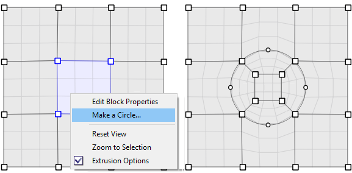
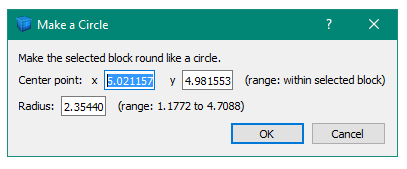
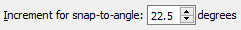
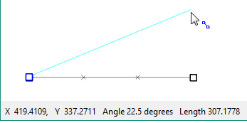
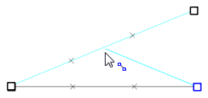
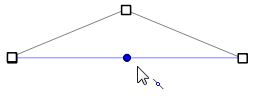
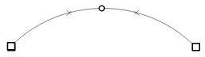

创建圆
创建圆的最简便方法是创建块体，在选择模式下选中该块体，然后从上下文菜单中选择“创建圆…”。该命令仅在选中单个块体时可用。它可用于三边或四边形块体。

对四边形块体使用时，圆内部会添加一个正方形块体。该正方形有助于改善圆内网格单元的形状。
选择“创建圆”命令时会出现一个对话框。您可在此输入圆的圆心和半径值。默认值根据所选块体填充。

如果所选块体附着到任何其他点，对话框将显示范围限制。这有助于防止块体过度扩大或收缩。最好从已达到或接近所需尺寸和位置的块体开始。
独立（未附着）的块体不受附着块体的范围限制。圆心和半径可输入任意（合理的）值。
由四边形块体创建圆后，可通过选择两个相对的点并观察状态栏中显示的它们之间的距离来检查其直径。
将圆形块体彼此相邻放置时要小心。它们很容易产生不易察觉的小面积重叠，从而使几何无效。
逐条边创建
要创建构成圆弧的各个边，可使用角度捕捉功能。
- 在“选项”对话框的“挤出”部分，将捕捉角度增量设为 22.5 度。


- 使用点-边工具（），按住 Control 键在挤出器中绘制一条水平线。（Control 键使线条捕捉到角度。）
- 仍按住 Control 键，从左端点向右上方以 22.5 度角绘制一条线。状态栏将显示该边相对水平方向上倾 22.5 度。


- 从右向左上倾 22.5 度绘制一条相交的边（仍使用 Control 键）。交点将位于经过前两个点的圆上。


- 删除右上方的多余点。
- 使用控制点工具在水平线上添加一个控制点。


- 选择顶部点，按空格键，从弹出的属性编辑器中复制坐标。然后单击该点并按 Delete 键。
- 选择该控制点，按空格键，将新坐标粘贴到弹出的属性编辑器中，然后按回车。这将把控制点上移到先前点的位置。
- 选择该边，并使用控制面板将边类型改为圆弧。该圆弧构成圆的四分之一。


此时，可添加将构成正方形的另外三条边，并对每条边重复上述过程将其变为圆弧。最终结果是一个圆。
| 这些内容对您有帮助吗？… | FLAC3D © 2019, Itasca | 原文更新于 2020 年 10 月 8 日 |
| 版权与免责声明 | ||